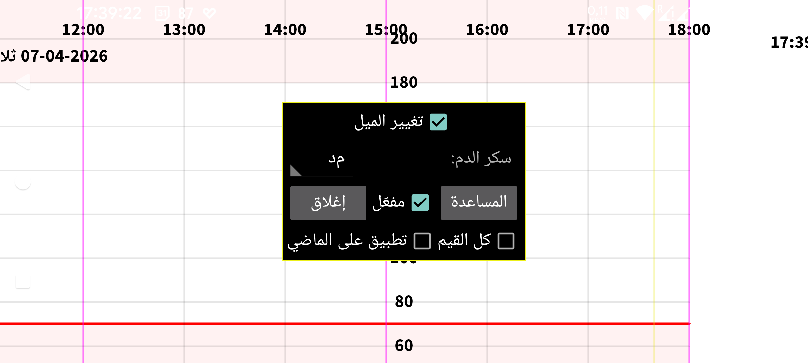

ar de es hi it ja nl ru uk uz en
يوفّر Juggluco 10.0.0 والإصدارات الأحدث إمكانية معايرة المستشعرات.
سكر الدم: حدِّد أيَّ تسمية تمثل قياسات وخز الإصبع لسكر الدم. بعد ذلك ستُستخدم جميع قيم سكر الدم المُدخلة تحت تلك التسمية للمعايرة، إلا إذا حدَّدت لها «استبعاد» ضمن القائمة الوسطى اليسرى←كمية جديدة. وعندما يكون معدل التغيّر كبيرًا جدًا من حيث القيمة المطلقة، تُستبعَد القيمة تلقائيًا.
ينبغي أن تستبعد فقط قيم الغلوكوز غير المناسبة للمعايرة لأن مستوى الغلوكوز غير مستقر. أمّا جميع القيم الأخرى فلا ينبغي استبعادها، حتى إذا كنت تعتقد أن المستشعر لا يحتاج إلى معايرة. وإذا كنت لا تريد المعايرة، فأزل تحديد «مفعّل»، ثم أزل في القائمة الوسطى اليمنى علامات ✓ أمام البث والقراءات والسجل، وضع علامة [x] بعدها. بهذه الطريقة تُستخدَم جميع قيم الغلوكوز المناسبة للمعايرة، وليس فقط القيم التي لا تتوافق.
كل قياس وخز إصبع جديد غير مستبعَد يُنشئ معايرة جديدة. ويمكنك مشاهدة المعايرات التي أُجريت بالضغط على «المعايرات» في شاشة معلومات المستشعر. ويمكنك الوصول إلى معلومات المستشعر بالضغط المطوّل على منحنى الغلوكوز أو من خلال القائمة اليسرى←المستشعر. (المعايرات خاصة بكل مستشعر على حدة.)
إذا لم يكن خيار «تطبيق على الماضي» محددًا، فستُعايَر قيم الغلوكوز باستخدام آخر معايرة تسبق قيمة الغلوكوز. وإذا كان خيار «تطبيق على الماضي» محددًا، فستُطبَّق آخر معايرة على جميع قيم الغلوكوز الخاصة بهذا المستشعر.
تغيير الميل:
إذا لم يكن خيار «تغيير الميل» محددًا، فلن يُضاف إلى كل قيمة غلوكوز من المستشعر أو يُطرح منها إلا مقدار ثابت للحصول على قيمة الغلوكوز المُعايَرة. وتكون العلاقة بين القيمة المُعايَرة وقيمة المستشعر كما يلي:
الغلوكوز المُعايَر = غلوكوز المستشعر + b
تُحدَّد قيمة b بواسطة المعايرة. وإذا استخدمت هذا الإعداد، فلا ينبغي أن تُجري المعايرة باستخدام قيم غلوكوز مرتفعة، لأن قيمة b المستنتجة ستكون كبيرة جدًا عند قيم الغلوكوز المنخفضة. كما أن معايرة القيم المرتفعة لا معنى كبيرًا لها، لأن الفرق بين القيمة المرتفعة والمرتفعة جدًا ليس مهمًا إلى هذه الدرجة.
إذا كان خيار «تغيير الميل» محددًا، تصبح العلاقة كما يلي:
الغلوكوز المُعايَر = a * غلوكوز المستشعر + b
حيث يمكن أن تكون قيمة a مختلفة عن 1. ومن المهم وجود معايرات متنوعة. فإذا كانت جميع قياسات الغلوكوز، على سبيل المثال، قد أُجريت عندما كانت قيمة الغلوكوز حول 90 mg/dL (5 mmol/L)، بينما كانت قيم المستشعر موزعة بين 54 mg/dL و180 mg/dL (3 mmol/L إلى 10 mmol/L)، فإن هذه القيم ليست متنوعة بما يكفي لاستنتاج قيمة a.
يعطي Juggluco أوزانًا مختلفة لقياسات سكر الدم بحسب قدمها. فقيمة الغلوكوز الحالية لها وزن = 1، أما قيم الغلوكوز الأقدم فلها وزن أصغر. كما تُوزَن المعايرة أيضًا بحيث يكون للمعايرة الأقدم تأثير أقل، بحيث تقترب a من 1 مع مرور الوقت، وتقترب b من الصفر مع مرور الوقت.
الوزن الكلي لقياسات سكر الدم المستخدمة يحدد مقدار الوزن الذي تُعطى له المعايرة. وكلما زاد عدد قياسات سكر الدم الحديثة، ازداد ميل قيم الغلوكوز المُعايَرة نحو أفضل توافق مستنتج بين سكر الدم وغلوكوز المراقبة المستمرة (CGM) من هذه القياسات.
لا يمكن معايرة قيم السجل في اللحظة نفسها. فبرمجة معايرة القيم تُنفَّذ بعد 21 دقيقة لمستشعرات Libre وبعد 31 دقيقة لمستشعرات CareSense Air، لكنها غالبًا ما تحدث بعد ذلك بوقت أطول. كما تُعاد معايرة البث في وقت لاحق أيضًا حتى يمكن استخدام قيمة CGM التالية.
مفعّل:
عندما يكون خيار «مفعّل» محددًا، تُستخدم قيم الغلوكوز المُعايَرة للتنبيهات، وعمليات البث، وHealth Connect، وخادم Nightscout/xDrip المضمَّن في Juggluco، وقيم الغلوكوز المُرسلة إلى الساعات، والغلوكوز العائم. وعلى الجانب الأيمن من Juggluco تُعرض القيمة المُعايَرة بخط كبير، وتظهر بعدها القيمة غير المُعايَرة بخط صغير. ولا تُستخدم هذه القيم مطلقًا عند الإرسال إلى Libreview.
يُفعَّل عرض منحنى قيم الغلوكوز المُعايَرة من القائمة الوسطى اليمنى أمام «البث» و«السجل». أمّا القيم الخام فيمكن تشغيلها وإيقافها بواسطة مربع الاختيار الموجود بعد «البث» و«السجل».
كل القيم: لا توجد قيمة مُعايَرة لبعض القيم. ولن يُظهر منحنى القيم المُعايَرة شيئًا إذا لم يكن خيار «كل القيم» محددًا. وإذا كان خيار «كل القيم» محددًا، فسيُظهر القيمة غير المُعايَرة. وبهذه الطريقة يمكنك إيقاف القيم الخام في القائمة الوسطى اليمنى→البث، مع الاستمرار في رؤية جميع القيم.